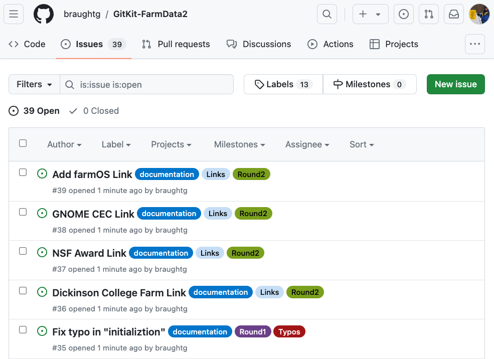
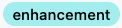

FOSS projects often use an issue tracker to maintain a list of bugs to be fixed, features to be added and other tasks to be completed. Thus, the issue tracker is a good place to go in order to find something to work on in a FOSS project. The exercises in this section will guide you through interaction with the GitKit FarmData2 issue tracker as shown in Figure 3.3.1. By the end of the section you will have found an issue to work on.

Figure3.3.1.The GitKit FarmData2 issue tracker in GitHub.
Subsection3.3.1Exploring the Issue Tracker
Exercises
1.
The tasks in this exercise will help you to find the issue tracker for the GitKit FarmData2 repository that you will be using.
(a)
Visit the URL that your instructor provided for the GitKit FarmData2 repository that you will be using as the upstream repository for your course.
(b)
Click the "Issues" tab near the top of the page to go to the issue tracker. This will take you to a page similar to the one shown in Figure 3.3.1.
2.
Use the issue tracker in the GitKit FarmData2 repository to complete the following tasks.
(a)
Every issue has a number and a title. What is the title of issue #10?
Add Missing "that"
Seeding Report: Allows Invalid Inputs
Seeding Input: Duplicates appearing in Area Dropdown
Dickinson College Farm Link
Hint.
Be sure you are looking at issue #10.
(b)
Each issue can have tags that can be used to sort and categorize issues. Select all of the tags that are associated with issue #8?

Hint.
Be sure you are looking at issue #8.
(c)
Which file in the repo would you need to modify in order to fix the typo described in issue #11?
ONBOARDING.md
INSTALL.md
CONTRIBUTING.md
LICENSE.md
Hint.
Be sure you are looking at issue #11.
(d)
Which of the following indicate an order by which the issues can be sorted?
Newest
Oldest
Recently updated
Most commented
Most difficult
Highest priority
Hint.
Find the "Sort" drop-down in the issue tracker and see what "Sort by" options there are.
(e)
Pick one of the sort orders that can be used with issues and briefly explain why it might be useful to sort the issues in that order.
Hint.
Think about why it might bue useful for a requestor, contributor or maintainer to find the types of issues that would be at the top of the sorted list.
Subsection3.3.2Claiming an Issue
Because projects often have many people working asynchronously many will have a process by which contributors can claim an issue that they are interested in working on and have that issue assigned to them in the issue tracker.
The following exercises will guide you through the process of claiming an issue to work on in the GitKit FarmData2 issue tracker.
Exercises
1.
Examine the GitKit FarmData2 issue tracker. How can you tell which issue have already been assigned?
The avatar of the assigned user appears to the right of the issue title.
The issue no longer appears in the issue tracker.
The username of assigned user appears next to the issue title.
The issue is moved to a separate list of assigned issues.
The issue tracker does not show any indication that an issue has been assigned.
Hint.
Look for some lines for issues that look different than the others and hover your mouse over the different parts.
In the GitKit FarmData2 issue tracker, contributors interested in working on an issue can request that it be assigned to them by commenting on the issue with the exact message:
I would like to work on this please!
The first person who comments on an unclaimed issue with this message will receive a response from the project maintainers. This messages will indicate that the issue has been assigned to them and the issue tracker will update to show this as you saw in Exercise 3.3.2.1.
2.
(a)
Choose an unassigned issue with a "Round 1" tag.
Hint.
See Exercise 3.3.2.1 for information about identifying assigned and unassigned issues.
(b)
Comment on the issue that you chose using the message above to claim it.
Hint.
Click on the issue title to open the issue and use the "Add a comment" box at the bottom of the page.
(c)
Reload the issue tracker and check that you received a response and that the issue has been assigned to you.
Hint.
If you did not receive a response, wait a few minutes and reload the issue tracker page again. Sometimes it takes a few minutes for your comment to be noticed and the issue to be assigned. If you still do not receive a response check that you typed the message correctly.
If you received a response telling you that you were not assigned the issue, someone else slipped a comment in just ahead of you and was assigned the issue. If this happens, just try Task 3.3.2.2.b again.
3.
Give the full URL to the issue that you have been assigned, for example https://github.com/my-class/GitKit-FarmData2/issues/2
4.
It is worth noting that different projects will have different processes for claiming and assigning issues, and some projects may not assign issues at all. What are some advantages and disadvantages of assigning issues to specific individuals?
Hint.
Think about this from both the individual developer’s perspective and from the overall project’s perspective.